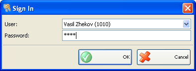

Activare Utilizator
Folositi fereastra Activare utilizatorn pentru schimbare utilizator activ. Selectati un nume utilizator din lista de utilizatori si introduceti parola corespunzatoare. Confirmati prin click pe butonul OK.

Aplicatia va activa utilizatorul ales si va efectua automat setarile pentru acest utilizator.
�2006-2012 Microinvest, All rights reserved